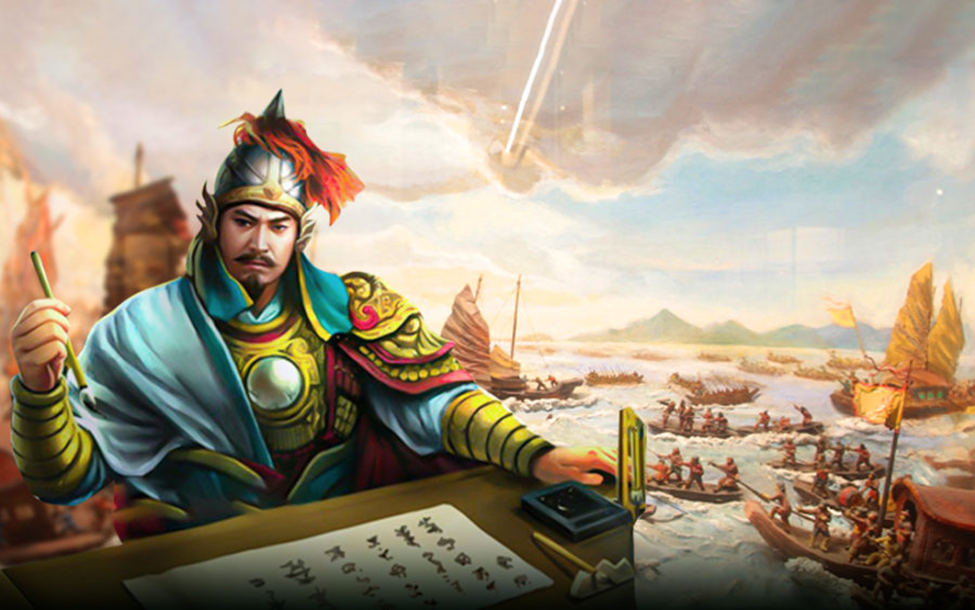

Kết luận

Lý Thường Kiệt là một trong những anh hùng vĩ đại nhất trong lịch sử Việt Nam, nổi bật với tài năng quân sự xuất sắc và tinh thần yêu nước sâu sắc. Ông không chỉ dẫn dắt quân đội Đại Việt đánh bại các cuộc xâm lược của quân Tống mà còn góp phần mở rộng lãnh thổ về phía Nam. Những chiến công của ông đã để lại dấu ấn sâu đậm trong tâm thức dân tộc, thể hiện ý chí kiên cường và tinh thần tự cường của người Việt.
Di sản văn hóa, lịch sử và giáo dục mà Lý Thường Kiệt để lại không chỉ được ghi nhớ qua các đền thờ, tượng đài hay thơ ca, mà còn sống mãi trong lòng người dân Việt Nam như một nguồn cảm hứng cho lòng yêu nước và khát vọng độc lập. Ông là hình mẫu lý tưởng của một vị lãnh đạo, luôn đặt lợi ích của đất nước lên hàng đầu, và là biểu tượng cho sức mạnh và sự đoàn kết của dân tộc Việt Nam qua các thời kỳ.
Quay lại trang chính